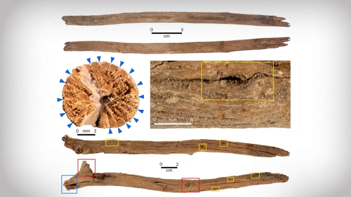
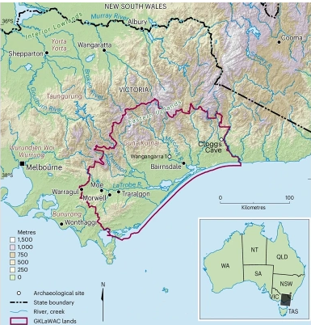

В австралийской пещере нашли ритуальные атрибуты. Как их использовали. Ритуал сохранялся несколько тысячелетий

Археологи обнаружили в пещере на юго-востоке Австралии ритуальные атрибуты, возраст которых составляет 11 тыс. и 12 тыс. лет. Это открытие проливает свет на ритуальные практики коренных жителей Австралии, которые передавались из поколения в поколение с последнего ледникового периода до колониальных времен. Находка описана в журнале Science.
Находка была сделана в пещере Клоггс, которая расположена в известняковом выступе у подножия Австралийских Альп. Пещера является важным археологическим памятником, свидетельствующим о человеческой деятельности около 25 тыс. лет назад.

Пещера Клоггс, вероятно, использовалась не как жилое помещение, а как уединенное место для проведения ритуалов. В 2020 году команда исследователей обнаружила в пещере деревянную палку, зарытую в отложениях. Радиоуглеродный анализ показал, что ей около 12 тыс. лет. Вторая палочка, найденная немного выше первой, оказалась возрастом около 11 тыс. лет. Они лежали на миниатюрных кострищах с камнями размером с ладонь и остатками травы и веточек. Палочки были изготовлены из деревьев рода Casuarina, традиционно используемых в церемониях аборигенов. Они были очищены от ветвей, смазаны жиром и слегка обожжены на концах.
Эти находки связали с этнографическими текстами века. Еще в 1887 году геолог Альфред Ховлетт (Alfred William Howlett) описал ритуалы колдунов мулла-муллунг, которые включали взятие предмета, связанного с жертвой, и прикрепление его к палке, смазанной жиром. Палка втыкалась в землю рядом с костром, и колдун произносил имя жертвы, пока палка не падала в огонь, что считалось проклятием.
Автор статьи Бруно Дэвид подчеркивает, что совпадение археологических данных и этнографических отчетов свидетельствует о непрерывности культурной практики на протяжении 12 тыс. лет. Это удивительное доказательство передачи знаний от одного поколения к следующему, отмечает он.
Другие ученые также высоко оценили исследование. Майкл Петраглия, директор Австралийского исследовательского центра эволюции человека при Университете Гриффита, назвал исследование революционным, отмечая его важность для понимания передачи знаний в древних культурах.Ранее ученые из Национального музея в Праге, изучая останки писцов, похороненных в некрополе в Абусире, обнаружили у них дегенеративные изменения суставов, которые, вероятно, были вызваны их профессиональной деятельностью. Оказалось, что египетские писцы, жившие в период между 2700 и 2180 годами до нашей эры, часто страдали от повреждений бедер, челюстей и больших пальцев.
Стивен Хокинг - британский физик-теоретик, космолог, астрофизик и писатель.
Директор по научной работе Центра теоретической космологии Кембриджского университета. Автор ряда научных трудов, в том числе совместной с Роджером Пенроузом работы по теоремам о гравитационной сингулярности в рамках общей теории относительности и теоретическому предсказанию выделения чёрными дырами излучения, часто именуемого излучением Хокинга. Хокинг первым изложил космологическую теорию, в которой были объединены представления общей теории относительности и квантовой механики. Активно поддерживал многомировую интерпретацию квантовой механики.